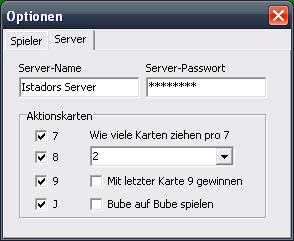

Server-Optionen
Um zu den Server-Optionen zu gelangen, wählen Sie im Hauptmenü Programm -> Optionen... oder drücken Sie F6 auf Ihrer Tastatur.
Im nun auftauchenden Fenster wählen Sie die Registerkarte Server.

Hier können Sie nun den Server-Namen sowie das Server-Passwort eingeben.
Außerdem können Sie hier, die das Spiel betreffenden Aktionskarten anpassen.
Ändern Sie die Regeln während eines laufenden Spieles, so werden Ihre Mitspieler hierüber informiert. Diese Regelungen treten jedoch erst in der nächsten Runde in Kraft.
Aktionskarten
Die linken Kontrollkästchen mit den Bezeichnungen 7, 8, 9 und J steuern ob die entsprechenden Karten überhaupt Aktionskarten oder normale Karten sind.
Wenn Sie hier z.B. das Häkchen bei der 9 entfernen, wird die Neun wie eine normale Karte gespielt. Nachdem man eine Neun spielt, ist demnach der nächste Spieler dran und nicht man selbst.
Wie viele Karten ziehen pro 7
Diese Einstellung reguliert wie viele Karten pro Sieben gezogen werden müssen.
Ist diese Option auf "1" müssen bei einer Sieben eine Karte und bei zwei Siebenen zwei Karten gezogen werden.
Ist diese Option auf "3" müssen bei einer Sieben drei Karte und bei zwei Siebenen sechs Karten gezogen werden.
Mit letzter Karte 9 gewinnen
Ist dieses Kontrollkästchen aktiviert, so ist es möglich zu gewinnen wenn man als letzte Karte eine Neun spielt. Ist es deaktiviert, so muss nach der Neun eine Karte gezogen werden.
Bube auf Bube spielen
Ist dieses Kontrollkästchen aktiviert, so ist es möglich einen Buben zu spielen wenn die oberste offene Karte ein Bube ist.